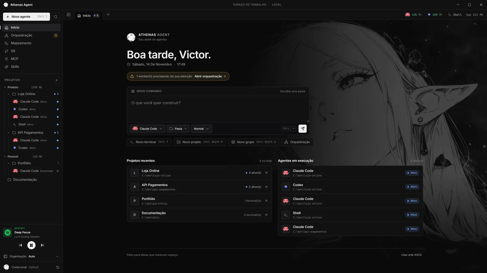

Painel central
Veja todos os agentes em execução, os projetos recentes e o que precisa da sua atenção. Descreva a tarefa, escolha o agente e comece.
- Claude Code, Codex ou Shell em qualquer pasta
- Modos Normal, Plan e Auto-aceitar
- Sessões retomáveis depois de fechar o app
